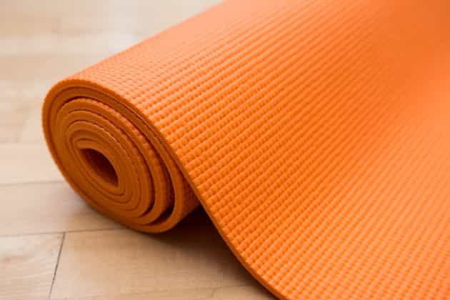
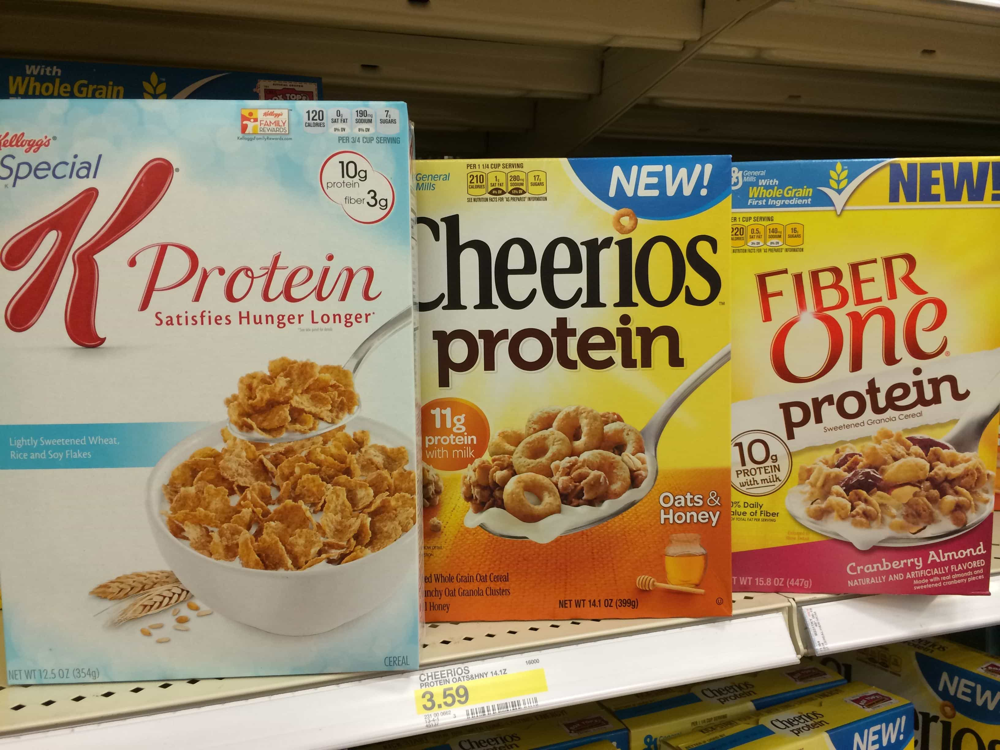

Sponsored Article is ROK's official account that publishes sponsored articles from advertisers. If you are interested hiring a sponsored article for your site, product, or service, visit our advertising page.


The following article was sponsored by Biology Boost.
Sometimes, the simple things in life work. While there are plenty of fancy products of both the physical and informational variety out there, all designed to better your life—the fact of the matter is that humans have survived for thousands of years without them.
While everyone is on a quest (well, except fat and ugly feminists) to become the best they can be from a physical and mental state, sometimes it’s easy to get overwhelmed with information. Sometimes you just need to get back to the basics.
Instead of relying on all of the fancy things to improve yourself, go back to the basics and then use the newer methods to boost yourself even further.
Here are 4 simple ways to improve both your physical and mental well-being that are easy to implement in your everyday life.
A refreshing morning walk, even if it’s only for 10 or 15 minutes, can wake you up and provide mental clarity for the remainder of your day. Doing 100 push-ups or a dozen pull-ups upon waking up will give you a great boost of energy.
Would a coffee company tell you this? Absolutely not.
Now, before I throw coffee under the bus, let me be clear—I love the stuff and drink it often. However, there are alternative methods.
Small amounts of exercise can give you the jump-start your day needs instead of relying on consumer products to get you going. Use those products to give you an additional boost on top of what nature has given you, instead of being 100% dependent on them.

If you’re suffering from chronic pain, simple stretches, taking up yoga can absolutely improve your life. Human beings were not meant to spend the majority of their days in front of a screen, sitting down and immobile.
It’s terrible for your neck, wrists, back, eyes, etc.—just about every part of your body. Hell, plenty of companies actually employ “ergonomic specialists” who come around and measure your desk height, wrist placement, and more. If you’re lucky, the company will pay for some nicer equipment (good chair, standing desk, etc.).
If you’re unlucky, you may be stuck dealing with the stiffness and/or pain on your own. I’ve known so many people who are just in an endless feedback loop with chronic pain, even if they’re totally healthy otherwise. They see multiple doctors and specialists, and yet nothing ever seems to get solved.
Of course, no professional medical provider would ever tell you something like this—they’d rather bill you for three sessions with a chiropractor every week. They’re the same people who recommend you buy the expensive, padded shoes instead of trying something minimalist.
Try downloading any random yoga or stretching app on your phone (or just browse YouTube).

The other day, I saw a commercial for Cheerios Protein and how good it was for you. I couldn’t help but chuckle. Here you have processed food, shoved into a box where it will last for longer than I’d care to know—and it’s recommended by all sorts of people as a healthy breakfast alternative.
Meanwhile, in recent years it’s been made to seem that your basic egg breakfast sound like the devil.
Cholesterol will kill you! Eggs cause cholesterol! Don’t eat them!
While the general message on eggs seems to be backtracking, almost anything can be spun to seem like a healthy alternative. You can apply this logic to just about any product on the market. It’s all in the ads.
A good rule of thumb to follow is this: does it come from the Earth, or from a factory?
It sounds hippy-ish, but it’s true. Look, if the workers in the plant have to wear a mask during production…

The fitness and general self-improvement community goes through phases, depending on what’s new and of course—what’s actually putting money into people’s pockets.
Some fitness gurus, Instagram models, etc. change their diet, programs, and complete way of life on a month-to-month basis—depending on which company is paying their rent that month.
If you want to truly hit high levels of both athletic and mental performance, you’re going to have to try things out and see what works for you.
Some people love zero carb diets because it melts the fat away and they feel great. Other people on the same program end up lacking any punch in the gym from a lack of carbs.
Many entrepreneurs are huge fans of intermittent fasting combined with cognitive enhancers you see in the movies. Other people are conked out by 10am if they don’t get some breakfast into them.
The point is, you’re going to have to try things on your own, log the results, and experiment. The same applies to almost any walk of life—no two businesses are built the same—are they?
Or you could just ignore all of this and buy a ton of Kratom. (Couldn’t resist.)
Jokes aside, it’s going to mean being uncomfortable at points as you fine-tune both your body and mind. Accept it for what it is—part of the journey. Try some of these more “natural” methods of improving yourself, and then boost up with the help of supplements, nootropics, and higher-end programs. Click here if you’d like to boost your life.